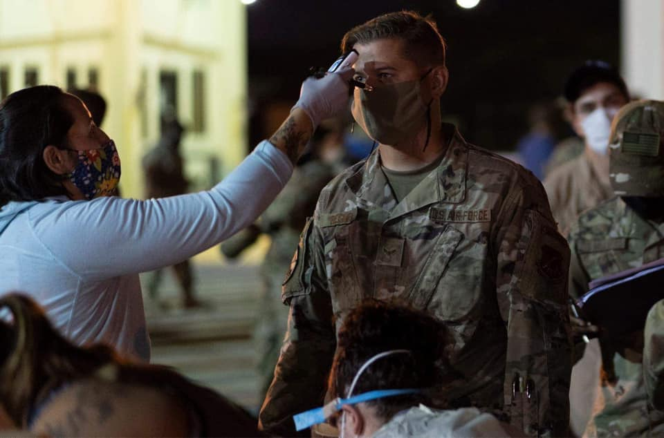
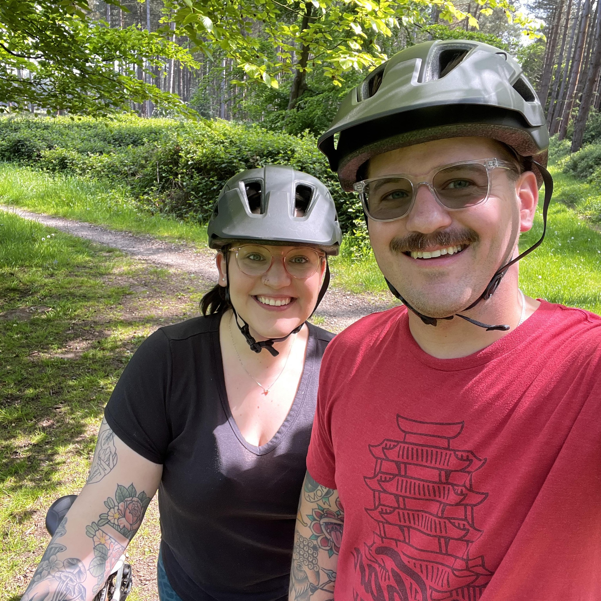
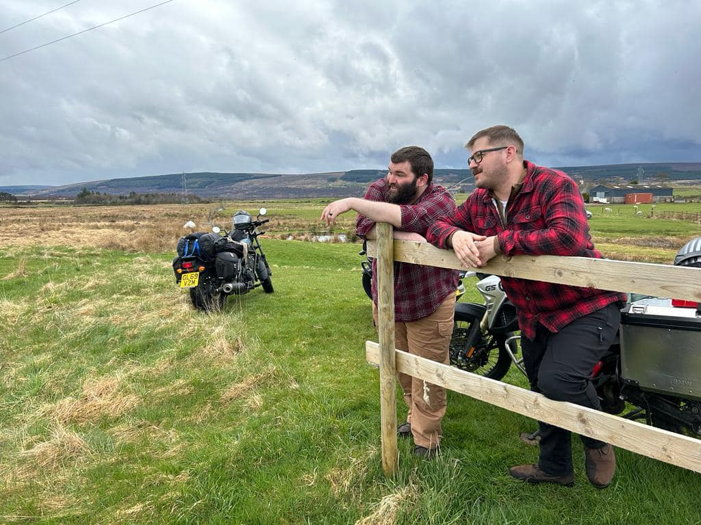
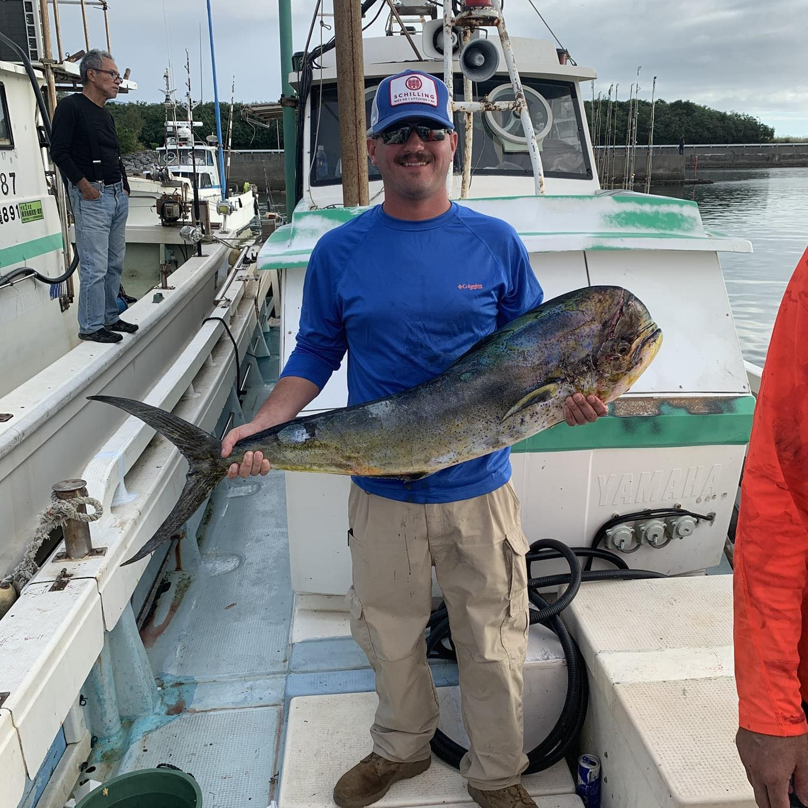
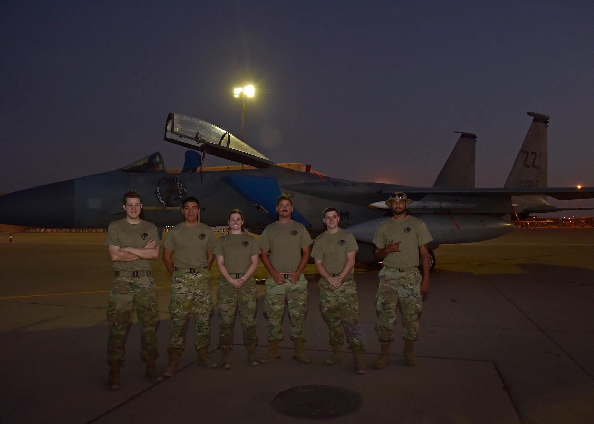

About Me
I am an Air Force instructor with a passion for developing people and helping others succeed in high-responsibility environments. My experience has shaped how I approach learning, not just as a transfer of information, but as a process of building confidence, adaptability, and real-world capability.
Outside of formal instruction, I value growth, consistency, and self-improvement in all areas of life. Whether through fitness, personal development, or new challenges, I am always looking for ways to improve and carry that mindset into both my personal and professional life.
I approach my work with a focus on clarity, purpose, and impact, aiming to make learning meaningful and directly applicable to real-world situations.
My Journey
My journey has been shaped by hands-on experience, leadership opportunities, and a gradual shift toward a passion for developing others. I began by building a strong technical foundation, learning the importance of precision, accountability, and performance in high-stakes environments.
Over time, my role evolved beyond technical work and into instruction and mentorship. This transition challenged me to think differently, not just about completing tasks, but about how people learn, adapt, and perform under pressure.
That experience sparked a deeper interest in training and development, leading me to focus on creating learning experiences that are structured, practical, and impactful. Each step along the way has reinforced my commitment to helping others grow and succeed.
Values & Motivation
I am motivated by the opportunity to make a meaningful impact through the development of others. I value clarity, accountability, and continuous improvement, both in myself and in the environments I am part of.
I believe effective training goes beyond delivering information; it should build confidence, reinforce critical thinking, and prepare individuals to perform in real-world situations. This perspective shapes how I approach both instruction and personal growth.
At the core of my work is a commitment to helping people succeed, while maintaining high standards and a focus on long-term development.